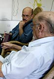
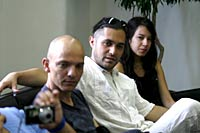
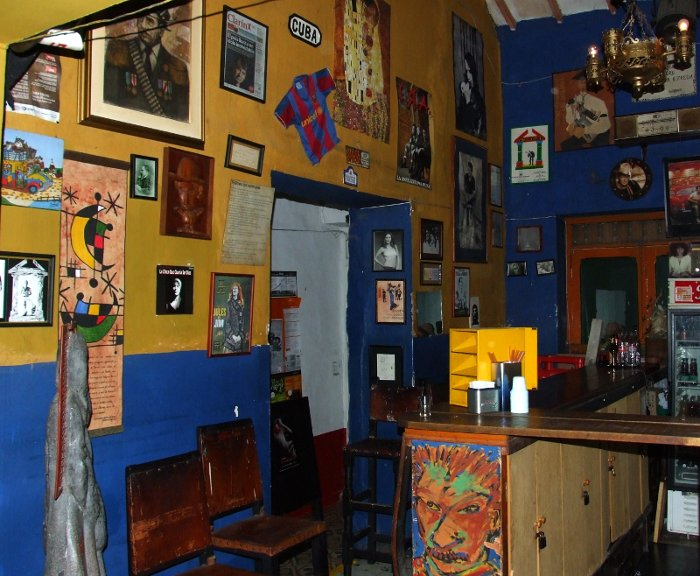
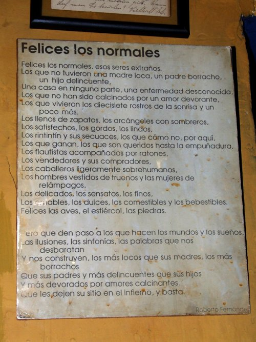

Emotivo encuentro entre Matacandelas y la Casa
Viernes, 14 de Mayo del 2010 (Cuba)

Matacandelas finaliza su participación en Mayo Teatral, luego de la última función de Fernando González. Velada metafísica y la conclusión, mañana sábado en la Casa, de su taller Los escenarios del actor
La Casa de las Américas acogió, en la mañana de este 14 de mayo, al Colectivo Teatral Matacandelas luego de finalizada anoche la última función de Fernando González. Velada metafísica, la propuesta del grupo en este Mayo Teatral. En un interesante y peculiar diálogo entre la agrupación colombiana y directivos de la Casa, Roberto Fernández Retamar, presidente de la institución, emparentaba en espíritu y personalidad, a Fernando González con nuestro Samuel Feijóo.
Para Retamar, quien apreció mucho el montaje de los Matacandelas, lo que más asemeja a ambas figuras es la particular manera de ser de ambos creadores. Peláez, quien ha visto la versión cinematográfica de Las aventuras de Juan Quin Quin en Pueblo Mocho, quedó prendado de Feijóo, al punto que ha decidido buscar información sobre el folclorista, poeta y novelista cienfueguero, fundador de las revistas Islas y Signos.
Roberto señaló la injusticia cometida con Samuel Feijóo al no ser condecorado con el Premio Nacional de Literatura. Fue la Casa, precisamente, la que lo propuso como merecedor de la más alta distinción que se entrega en Cuba a los escritores. Samuel no ha recibido nunca los honores y reconocimiento merecidos a nivel nacional, más allá de aquellos obtenidos siempre en su región natal donde sigue siendo recordado y estudiado.
Con relación a esto, Peláez apuntó que tampoco Fernando González recibió mucha atención. No fue hasta el año 2002 que se funda la Corporación luego de su muerte en 1964.

Al tiempo que el diálogo discurría conversando sobre Fernando y Feijóo, Cristóbal Peláez, en nombre de todos, extendió un ejemplar de una antología poética de Roberto y le pidió que leyera un poema. Retamar escogió Felices los normales y mientras leía, los actores repetían en voz baja cada verso.
Confesaron luego que el texto estaba enmarcado en el bar del grupo, de ahí que todos se lo supieran de memoria. Ante esta declaración, Retamar dijo, entonces, que Felices los normales, escrito en 1963 a raíz de la muerte de la pintora Antonia Eiriz, era su poema preferido, por eso cada vez que alguien le pedía que leyera un poema, él siempre escogía este.
Cristóbal Peláez concluye mañana sábado en la Casa su taller Los escenarios del actor y con ello el Colectivo Teatral Matacandelas da fin a su temporada en el Mayo Teatral.
Publicado en La Ventana, Portal informativo de la Casa de las Américas
El bar de Matacandelas y el Cuadro con el poema de Roberto Fernández Retamar

